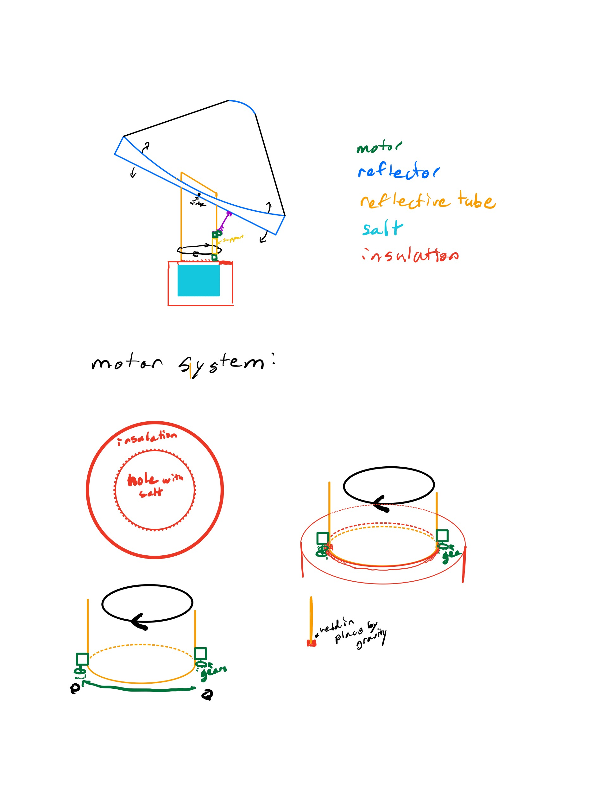

## Week 7:
### Monday:
We went over our gathered data and sketches in class. We also covered the prototype reflector with
reflective tape over the acrylic so we could test it again for improvement. We also added a
small bounce mirror (the innermost circle of reflectors of the old prototype) We did end up testing
the reflector with a floodlight, and it did not focus very well. We hypothesized that this might be
due to the calculated focal distance from the sun (which is very far/almost infinitely far away
from the reflector) being different then the floodlight (which was a couple of meters away).
### Wednesday:
I drew a sketch on paper. In class, we started to learn how to use Fusion to create models of our
prototype so we could visualize/test the design without making it.
My sketches:

<img src="./Page2.jpg" alt="sketch of our design" width="700"/>
The basic idea of what we are trying to create with Fusion: